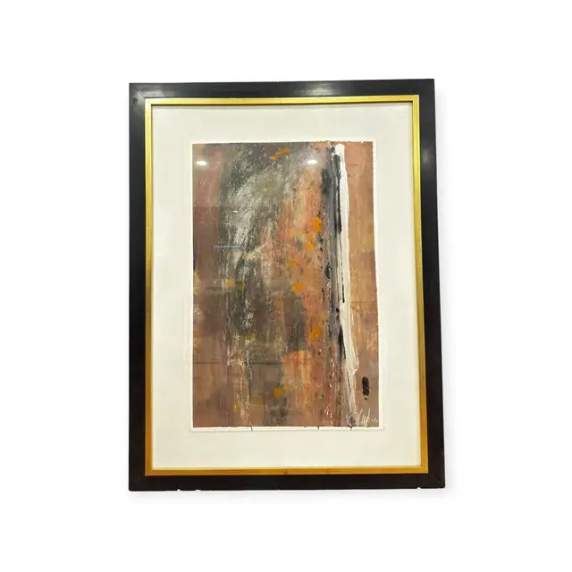
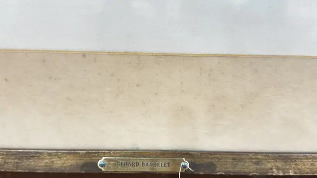
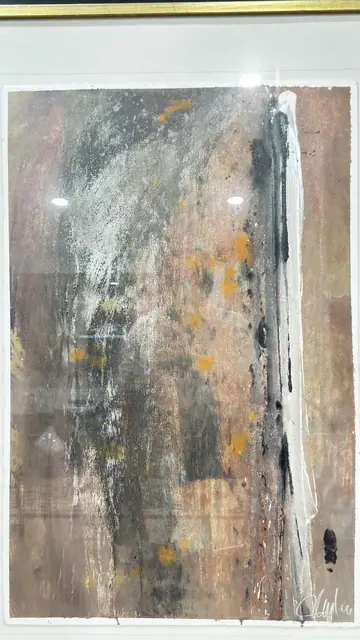
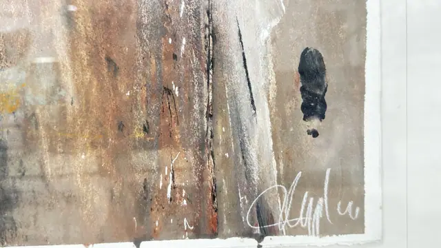

Paintings & Prints
Large Abstract Mixed Media on Deckled Paper, Signed, Framed
· late 20th century
Price Upon Request




About the Item
A tall abstract sheet built from dragged and scraped layers - rust, brick and ochre washes at the base rising into smoky grey, with a black vertical shaft down the right of centre and a torn white streak of dry white pigment beside it. Small flecks of orange and a heavy black blot punctuate the surface, and the paint sits with visible grain and scratched-back texture. The sheet has a soft deckled edge and floats on a white mount, signed in white at the lower right. Medium: mixed media (acrylic and gouache with scraped and dry-brushed passages) on heavy deckle-edged paper. Signed lower right of the sheet, written in white over the dark ground. Inscribed on the reverse or mount: GERARD BACHELET. Condition: Sheet appears clean and unfaded with its deckle intact; glazing glare and reflections throughout. Frame in good order with light dust.
Details
- Creation Year:
- late 20th century
- Dimensions:
- Height: 42.5 in (107.95 cm)
Width: 33.0 in (83.82 cm)
outside of frame - Medium:
- mixed media (acrylic and gouache with scraped and dry-brushed passages) on heavy deckle-edged paper
- Period:
- 20Th
- Condition:
- Offered in the condition shown in the photographs.
- Reference Number:
- VO-248
- Documentation:
- no certificate photographed
- Gallery Location:
- GERARD BACHELET